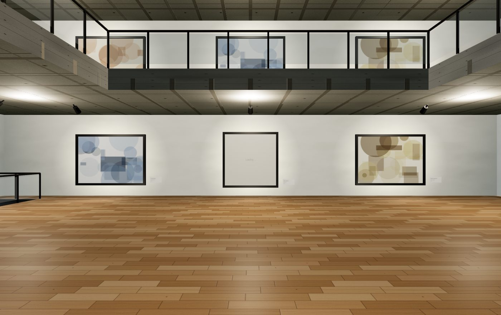

⚡ 베이크드 라이팅 — 모바일 프레임 개선
원인 (무엇이 문제였나)
- 실기기(모바일)에서 "조작이 쉽지 않다"는 제보에 이어, 저사양 폰에서 프레임이 충분히 나오지 않을 구조적 요인이 확인됨.
- 증상: 최신 폰·데스크톱에서는 55~60fps 예상이나, 보급형·구형 폰과 고해상도(DPR 3) 기기에서 20~30fps 수준으로 떨어질 위험.
분석 (병목 실측)
기기 성능과 무관한 렌더 부하 지표를 헤드리스 브라우저로 실측했다.
| 지표 | 측정값 | 판정 |
|---|---|---|
| 삼각형 | 70,066 | 매우 가벼움 — 병목 아님 |
| 텍스처 | 59장 | 양호 |
| 실시간 조명 | 33개 (SpotLight 14) | 주 병목 |
| 드로우콜 | 555 | 부 병목 (모바일 기준 높음) |
| 해상도 배율 | 최대 2 캡 | 기존 방어 확인 |
핵심 발견: three.js 포워드 렌더러는 화면의 모든 픽셀이 씬의 모든 조명을 셰이더에서 계산한다. 특히 작품마다 달린 SpotLight 14개는 원뿔 각도·페더링 (penumbra) 연산이 픽셀 단위로 반복돼 fill-rate가 약한 모바일 GPU에서 비용이 가장 크다. 반면 지오메트리(삼각형 7만)는 전혀 문제가 아니었다 — "가벼운 씬에 무거운 조명"이 진단.
또한 미술관 조명은 전부 정적(움직이지도, 작품 스포트는 테마별로 색이 변하지도 않음 — 전 테마 공통 웜화이트 0xfff4e0)이므로, 매 프레임 실시간 계산은 순수 낭비였다.
개선 (무엇을 했나)
전시장이 블렌더 에셋이 아니라 코드 생성 씬이라 오프라인 라이트맵 대신 디캘 베이킹을 적용했다.
1. 스포트라이트 14개 전부 제거 → 각 작품에 미리 그린 방사형 그라디언트 텍스처 2장으로 대체: - 벽 글로우(액자 주변 월워셔 워시, 가산 블렌딩, 불투명도 0.42) - 바닥 빛 웅덩이(작품 앞 1.15m, 불투명도 0.22) - 그라디언트는 256² 캔버스 1장을 앱 수명 동안 공유. 2. 작품 자체발광 보정: 스포트가 사라지면 작품이 어두워지므로 작품 재질에 emissiveMap(작품 이미지와 동일 텍스처, 강도 0.55)을 미러. 부수 효과로 새벽·야간 테마에서도 작품이 항상 정확한 색으로 표시된다(실제 미술관의 원칙). 3. 조명기구는 시각 요소로 유지: 트랙 헤드·발광 렌즈 메시는 그대로 — 겉모습 변화 최소화. 4. 모바일 렌더 프리셋(동반 개선): 터치 기기는 antialias off + DPR 1.5 캡 — 픽셀 비용 약 40% 추가 절감. 5. 스코프 판단: 천장 다운라이트(PointLight ~15개)는 시간연동(cycle) 테마가 런타임에 색·강도를 보간하는 기계와 얽혀 있어 이번 베이킹에서 제외. (다음 후보 — 테마별 디캘 틴트 갱신 경로를 설계한 뒤 진행.)
과정 중 수리한 함정: 헬퍼 삽입 시 export function getViewingPose의 export와 function 사이가 갈라져 모듈 export가 깨짐 — 부분 문자열 치환의 위험 사례로 기록해 둔다(앵커는 라인 전체로 잡을 것).
결과 (수치 검증)
| 지표 | 개선 전 | 개선 후 | 변화 |
|---|---|---|---|
| 실시간 조명 | 33개 | 19개 | −42% |
| SpotLight | 14개 | 0개 | −100% |
| 드로우콜 | 555 | 477 | −14% |
| 시각 품질 | — | 스크린샷 대조로 동등 확인 | 유지 |
- 픽셀당 조명 연산에서 가장 비싼 스포트라이트가 0이 되어, 저사양 폰의 프레임 개선 폭이 가장 클 것으로 예상. 실기기 FPS 계측(우상단 표시)으로 후속 확인 예정.
- 남은 개선 후보: ① 다운라이트 15개 베이킹(조명 19→4) ② 액자·치비 파츠 지오메트리 병합(드로우콜 477→300대) ③ 저사양 감지 시 AI 관객 수 축소.
